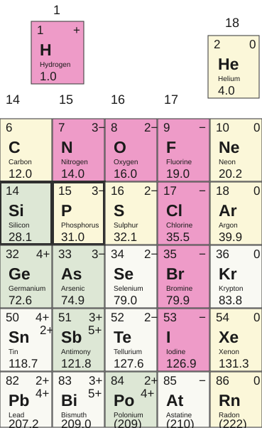

2.3 Conservation of Mass in Chemical Equations2.3 化学方程式中的质量守恒
The Law of Conservation of Mass质量守恒定律
- In chemical reactions, atoms are neither created nor destroyed化学反应中，原子既不会被创造，也不会被消灭。
- Developed by Antoine Lavoisier and his wife Marie-Anne in the 1700s这一定律由安托万·拉瓦锡和他的妻子玛丽-安娜在 18 世纪提出。
- Mass of reactants = Mass of products反应物的质量 = 生成物的质量。
Chemical Reactions化学反应
Chemical reactions result in chemical changes.化学反应会产生化学变化。
- Chemical changes occur when new substances are created.当新的物质被生成时，就发生了化学变化。
- The original substance(s), called reactants, change into new substance(s) called products.原来的物质称为反应物，它们会转变成新的物质，称为生成物。
Chemical change means new compounds are created.化学变化表示新的化合物被生成。
- BUT no new matter is created or destroyed; atoms are just rearranged.但是，没有新的物质被创造或消灭；原子只是重新排列。
- All of the matter in the reactants = all of the matter in the products反应物中的全部物质 = 生成物中的全部物质。
- John Dalton, 200 years ago, realized that atoms simply rearrange themselves during chemical reactions.约 200 年前，约翰·道尔顿认识到原子在化学反应中只是重新排列。
- Number of each atom in reactants = number of each atom in products反应物中每种原子的数目 = 生成物中每种原子的数目。
Chemical reactions can be written in different ways.化学反应可以用不同的方式表示。
- A word equation:文字方程式：
- Nitrogen monoxide + oxygen --> nitrogen dioxide一氧化氮 + 氧气 --> 二氧化氮
- A chemical equation:化学方程式：
- 2NO + O2 → 2 NO2
Coefficients - the big numbers in front of each compound used to indicate the ratio of compounds in the reaction. Here, there are twice as many NO and NO2 as there are O2.系数是写在每个化合物前面的较大数字，用来表示反应中各物质的比例。在这里，NO 和 NO2 的数量都是 O2 的两倍。
Polyatomic Elements, Diatomic Elements and Common Names多原子单质、双原子单质和常见名称
Elements and Compounds you should know你应该认识的元素和化合物
- Most elements occur naturally as singlets but there are some that you should be aware of.大多数元素在自然界中以单原子形式存在，但有一些需要特别注意。
- Be aware of these polyatomic elements: P4 and S8要注意这些多原子单质：P4 和 S8。
- The "special seven" are all diatomic elements you should memorize:“特别七种”都是你需要记住的双原子单质：
- H2, N2, O2, F2, Cl2, Br2, I2
The pink shaded area in the picture below shows the diatomic atoms.下图中粉红色阴影区域表示双原子元素。

- Several common covalent molecules containing hydrogen have common names that you should memorize as the name gives you no clue as to the formula.有几个含氢的常见共价分子有固定俗名，需要记忆，因为名称本身无法直接告诉你化学式。
- methane = CH4, glucose = C6H12O6, ethane = C2H6, ammonia = NH3methane = CH4，glucose = C6H12O6，ethane = C2H6，ammonia = NH3
Writing Chemical Equations书写化学方程式
The simplest form of a chemical equation is a word equation化学方程式最简单的形式是文字方程式。
- there is not much information, other than the elements/compounds that are involved除了参与反应的元素或化合物外，提供的信息并不多。
- potassium metal + oxygen gas → potassium oxide钾金属 + 氧气 → 氧化钾
- reactants appear on the left side of the arrow and products appear on the right反应物写在箭头左边，生成物写在箭头右边。
A skeleton equation shows the formulas of the elements/compounds骨架方程式会显示元素或化合物的化学式。
- it shows atoms and compounds, but not the numbers of each (coefficients are not included)它显示原子和化合物，但不显示每种物质的数量（不包含系数）。
- K(s) + O2(g) → K2O(s)
A balanced chemical equation shows all atoms and compounds and their quantities配平后的化学方程式会显示所有原子、化合物及其数量。
- balancing ensures that the number of each atom is the same on both sides of the reaction arrow配平可确保反应箭头两边每种原子的数目相同。
- when determining coefficients, always use the smallest whole number ratio确定系数时，要始终使用最小的整数比。
- 4K(s) + O2(g) → 2K2O(s)
States of matter are often indicated in chemical equations.化学方程式中通常还会标出物质状态。
The letters indicate the state of each compound.
(aq)aqueous/dissolved in water
(s)solid
(l)liquid
(g)gas这些字母表示每种物质的状态。
(aq) 水溶液 / 溶于水
(s) 固体
(l) 液体
(g) 气体
Balancing Equations配平方程式
If mass is conserved, then we should find the same amount of each element on either side of a reaction equation:如果质量守恒，那么在反应方程式两边，每种元素的数量都应该相同：
5 steps to balancing an equation:配平方程式的 5 个步骤：
- Count the number of each atom on each side of the equation.数一数方程式两边每种原子的个数。
- Change coefficients as needed, first balancing the more complicated molecules.按需要调整系数，先配平较复杂的分子。
- Just remember - only change coefficients.记住：只能改变系数。
- Often, polyatomic ions can be counted as a group instead of as individual atoms.多原子离子通常可以作为一个整体来计数，而不是逐个原子计算。
- Practice.多练习。
Balancing Chemical Equations配平化学方程式
Because of the Law of Conservation of Mass, we can count atoms and use math to balance the number of atoms in chemical equations.根据质量守恒定律，我们可以通过数原子并运用数学方法来配平化学方程式中的原子数。
- Word equation: methane + oxygen → water + carbon dioxid文字方程式：甲烷 + 氧气 → 水 + 二氧化碳
- Skeleton equation: CH4 + O2 → H2O + CO2骨架方程式：CH4 + O2 → H2O + CO2
- To balance the compounds, take note of how many atoms of each element occur on each side of the reaction arrow: 1 Carbon, 4 Hydrogen, 2 Oxygen → 1 Carbon, 2 Hydrogen, 3 Oxygen要配平方程式，先记录反应箭头两边每种元素的原子数：1 个碳、4 个氢、2 个氧 → 1 个碳、2 个氢、3 个氧。
To balance, attempt to find values that equate atoms on both sides. Notice that C is currently balanced. Start by balancing H:配平时，尝试找到使两边原子数相等的数值。注意现在 C 已经平衡了，所以先从 H 开始：
By placing a 2 in front of H2O, the "H" are balanced: 4 on both sides.在 H2O 前面加上 2 后，H 就平衡了：两边都是 4 个。
CH4 + O2 → 2 H2O + CO2
By placing a 2 in front of O2, the "O" are balanced: 4 on both sides.在 O2 前面加上 2 后，O 也平衡了：两边都是 4 个。
CH4 + 2 O2 → 2 H2O + CO2
The equation is now balanced!这个方程式现在已经配平了！
1 Carbon, 4 Hydrogen, (2×2) Oxygen → 1 Carbon, (2×2) Hydrogen, (2×1) + 2 Oxygen1 个碳、4 个氢、(2×2) 个氧 → 1 个碳、(2×2) 个氢、(2×1)+2 个氧。
Balanced equation: CH4 + 2 O2 → 2 H2O + CO2
Balance chemical equations by following these steps:配平化学方程式时，请遵循以下步骤：
- Trial and error will work, but can be very inefficient尝试与修正的方法可以奏效，但效率可能很低。
- Balance elements found in compounds first and elements that are alone last (in the example O was balanced last)先配平化合物中的元素，最后再配平单独存在的元素（在这个例子中 O 最后才配平）。
- Balance one compound at a time一次只配平一个化合物。
- Only add coefficients; NEVER change subscripts!只能添加系数；绝对不要改下标！
- If H and O appear in more than one place, attempt to balance them LAST如果 H 和 O 出现在多个位置，尽量最后再配平它们。
- Polyatomic ions (such as SO42-) can often be balanced as a whole group多原子离子（如 SO42-）通常可以作为一个整体来配平。
- Always double-check after you think you are finished. You may have UNbalanced an element without realizing it!当你觉得已经完成时，一定要再次检查。你可能会在不知不觉中把某个元素弄得不平衡！
Balance the following:请配平下面的方程式：
Fe + Br2 → FeBr3
Sn(NO2)4 + K3PO4 → KNO2 + Sn3(PO4)4
C2H6 + O2 → CO2 + H2O
Answer答案
Answer(Click again to hide)答案（再次点击可隐藏）
2Fe + 3Br2 → 2FeBr3
3Sn(NO2)4 + 4K3PO4 → 12KNO2 + Sn3(PO4)4
2C2H6 + 7O2 → 4CO2 + 6H2O
Explanation讲解
Practice练习
Give the following simulation a try by balancing the reactions in the introduction and then trying the game.试一试下面的模拟：先在介绍部分配平反应，再尝试玩游戏。
Practice Quiz练习测验
Click here to practice writing chemical equations and to prepare for your Chemistry test. Try at least the first two questions.点击这里 练习书写化学方程式，并为你的化学测验做准备。请至少完成前两题。